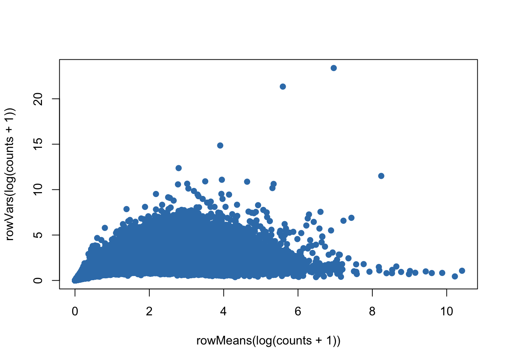

Last updated: 2018-08-03
workflowr checks: (Click a bullet for more information) ✔ R Markdown file: up-to-date
Great! Since the R Markdown file has been committed to the Git repository, you know the exact version of the code that produced these results.
✔ Environment: empty
Great job! The global environment was empty. Objects defined in the global environment can affect the analysis in your R Markdown file in unknown ways. For reproduciblity it’s best to always run the code in an empty environment.
✔ Seed:
set.seed(20180731)
The command set.seed(20180731) was run prior to running the code in the R Markdown file. Setting a seed ensures that any results that rely on randomness, e.g. subsampling or permutations, are reproducible.
✔ Session information: recorded
Great job! Recording the operating system, R version, and package versions is critical for reproducibility.
✔ Repository version: 18ea3c6
wflow_publish or wflow_git_commit). workflowr only checks the R Markdown file, but you know if there are other scripts or data files that it depends on. Below is the status of the Git repository when the results were generated:
Ignored files:
Ignored: .DS_Store
Ignored: .Rhistory
Ignored: .Rproj.user/
Ignored: data/.DS_Store
Ignored: inst/.DS_Store
Ignored: inst/doc/.DS_Store
Ignored: vignettes/.DS_Store
Untracked files:
Untracked: Clustering_analyses_figure4_islets_sv1_3.pdf
Untracked: analysis/figure/
Untracked: docs/figure/Brain_scRNASeq_neuron_vs_oligodendrocyte_single_run.Rmd/
Untracked: docs/figure/hidden_heterogeneity_glioblastoma.Rmd/
Untracked: docs/figure/tSNE_post_IA-SVA_3celltypes.Rmd/
Untracked: docs/figure/tSNE_post_IA-SVA_Xin_Islets.Rmd/
Untracked: output/Brain_scRNASeq_neuron_astro_190_cells.pdf
Untracked: output/Brain_scRNASeq_neuron_astro_190_cells_run_time.pdf
Untracked: output/CC_genes.long.txt
Untracked: output/CC_genes.short.txt
Untracked: output/Clustering_analyses_figure3_sv1.pdf
Untracked: output/Clustering_analyses_figure4_Xin.pdf
Untracked: output/Clustering_analyses_figure4_Xin_sv1.pdf
Untracked: output/FigureS11_Xin_Islets_AllCells_IASVA_Markers_pheatmap.pdf
Untracked: output/Lawlor_Islets_3Cells_CellView_Seurat_FigS.pdf
Untracked: output/Lawlor_Islets_3Cells_IASVA_SV1SV3_rsqcutoff0.3_pheatmap_iasvaV0.95_Figure4_C.pdf
Untracked: output/Lawlor_Islets_3Cells_IASVA_SV4_rsqcutoff0.3_pheatmap_iasvaV0.95.pdf
Untracked: output/Lawlor_Islets_3Cells_IASVA_pairs4SVs_iasvaV0.95_black_FigS6.pdf
Untracked: output/Lawlor_Islets_3Cells_IASVA_pairs4SVs_iasvaV0.95_color_FigS6.pdf
Untracked: output/Lawlor_Islets_3Cells_SV1_SV3_Cell_Type_Genes_rsqcutoff0.3.txt
Untracked: output/Lawlor_Islets_3Cells_SV4_Genes_rsqcutoff0.3.txt
Untracked: output/Lawlor_Islets_3Cells_tSNE_IA-SVA_Fig4AB.pdf
Untracked: output/Patel_Glioblastoma_MGH30_CellCycle_Figure3ABCD.pdf
Untracked: output/Patel_Glioblastoma_MGH30_Cellcycle_SV1_Genes_rsqcutoff0.3.txt
Untracked: output/Patel_Glioblastoma_MGH30_Cellcycle_SV1_Genes_rsqcutoff0.4.txt
Untracked: output/Patel_Glioblastoma_MGH30_iasva_SV1_genes_rsqcutoff0.3_pheatmap_iasvaV0.95_Figure3F.pdf
Untracked: output/Xin_Islets_AllCells_IASVA.pdf
Untracked: output/Xin_Islets_AllCells_IASVA_nocolor.pdf
Untracked: output/Xin_Islets_AllCells_PCA.pdf
Untracked: output/Xin_Islets_AllCells_SV1_Genes_rsqcutoff0.2.txt
Untracked: output/Xin_Islets_AllCells_SV1_Genes_rsqcutoff0.3.txt
Untracked: output/Xin_Islets_AllCells_SV3_Genes_rsqcutoff0.2.txt
Untracked: output/Xin_Islets_AllCells_SV3_Genes_rsqcutoff0.3.txt
Untracked: output/Xin_Islets_AllCells_USVA.pdf
Untracked: output/Xin_Islets_AllCells_tSNEByKnownFactors_FigureS9.pdf
Untracked: output/Xin_Islets_All_demensionality_reduction_Figure4DEFG.pdf
To make simulation studies more objective, we used a simulation design suggested by the author of svaseq (http://jtleek.com/svaseq/simulateData.html). We slightly modified the original design to simulate realistic single cell RNA sequencing (scRNA-seq) data sets (read counts with a high dropout rate) and multiple correlated hidden factors. We simulated baseline scRNA-seq data using the Polyester R package (https://bioconductor.org/packages/release/bioc/html/polyester.html) by using the zero-inflated negative binomial distribution parameters estimated from a real-world scRNA-seq data obtained from human pancreatic islet samples (Lawlor et. al., 2016). The islet scRNA-seq dataset is included in a R data package (“iasvaExamples”) containing data examples for IA-SVA (https://github.com/dleelab/iasvaExamples). To install the ‘iasvaExamples’ package, follow the instruction provided in the GitHub page.
rm(list=ls())
library(iasva)
library(iasvaExamples)
library(polyester)
library(sva)
library(corrplot)
library(DescTools) #pcc i.e., Pearson's contingency coefficient
library(RColorBrewer)
library(SummarizedExperiment)
color.vec <- brewer.pal(8, "Set1")data("Lawlor_Islet_scRNAseq_Read_Counts")
data("Lawlor_Islet_scRNAseq_Annotations")
ls()[1] "color.vec" "Lawlor_Islet_scRNAseq_Annotations"
[3] "Lawlor_Islet_scRNAseq_Read_Counts"counts <- Lawlor_Islet_scRNAseq_Read_Counts
anns <- Lawlor_Islet_scRNAseq_Annotations
dim(anns)[1] 638 26dim(counts)[1] 26542 638summary(anns) run cell.type COL1A1 INS
Length:638 Length:638 Min. :1.00 Min. :1.000
Class :character Class :character 1st Qu.:1.00 1st Qu.:1.000
Mode :character Mode :character Median :1.00 Median :1.000
Mean :1.03 Mean :1.414
3rd Qu.:1.00 3rd Qu.:2.000
Max. :2.00 Max. :2.000
PRSS1 SST GCG KRT19
Min. :1.000 Min. :1.000 Min. :1.000 Min. :1.000
1st Qu.:1.000 1st Qu.:1.000 1st Qu.:1.000 1st Qu.:1.000
Median :1.000 Median :1.000 Median :1.000 Median :1.000
Mean :1.038 Mean :1.039 Mean :1.375 Mean :1.044
3rd Qu.:1.000 3rd Qu.:1.000 3rd Qu.:2.000 3rd Qu.:1.000
Max. :2.000 Max. :2.000 Max. :2.000 Max. :2.000
PPY num.genes Cell_ID UNOS_ID
Min. :1.000 Min. :3529 10th_C1_S59 : 1 ACCG268 :136
1st Qu.:1.000 1st Qu.:5270 10th_C10_S104: 1 ACJV399 :108
Median :1.000 Median :6009 10th_C11_S96 : 1 ACEL337 :103
Mean :1.028 Mean :5981 10th_C13_S61 : 1 ACIW009 : 93
3rd Qu.:1.000 3rd Qu.:6676 10th_C14_S53 : 1 ACCR015A: 57
Max. :2.000 Max. :8451 10th_C16_S105: 1 ACIB065 : 57
(Other) :632 (Other) : 84
Age Biomaterial_Provider Gender Phenotype
Min. :22.00 IIDP : 45 Female:303 Non-Diabetic :380
1st Qu.:29.00 Prodo Labs:593 Male :335 Type 2 Diabetic:258
Median :42.00
Mean :39.63
3rd Qu.:53.00
Max. :56.00
Race BMI Cell_Type Patient_ID
African American:175 Min. :22.00 INS :264 P1 :136
Hispanic :165 1st Qu.:26.60 GCG :239 P8 :108
White :298 Median :32.95 KRT19 : 28 P3 :103
Mean :32.85 SST : 25 P7 : 93
3rd Qu.:35.80 PRSS1 : 24 P5 : 57
Max. :55.00 none : 21 P6 : 57
(Other): 37 (Other): 84
Sequencing_Run Batch Coverage Percent_Aligned
12t : 57 B1:193 Min. :1206135 Min. :0.8416
4th : 57 B2:148 1st Qu.:2431604 1st Qu.:0.8769
9th : 57 B3:297 Median :3042800 Median :0.8898
10t : 56 Mean :3160508 Mean :0.8933
7th : 55 3rd Qu.:3871697 3rd Qu.:0.9067
3rd : 53 Max. :5931638 Max. :0.9604
(Other):303
Mitochondrial_Fraction Num_Expressed_Genes
Min. :0.003873 Min. :3529
1st Qu.:0.050238 1st Qu.:5270
Median :0.091907 Median :6009
Mean :0.108467 Mean :5981
3rd Qu.:0.142791 3rd Qu.:6676
Max. :0.722345 Max. :8451
ContCoef(table(anns$Gender, anns$Cell_Type))[1] 0.225969ContCoef(table(anns$Phenotype, anns$Cell_Type))[1] 0.1145096ContCoef(table(anns$Race, anns$Cell_Type))[1] 0.3084146ContCoef(table(anns$Patient_ID, anns$Cell_Type))[1] 0.5232058ContCoef(table(anns$Batch, anns$Cell_Type))[1] 0.3295619plot(rowMeans(log(counts+1)),rowVars(log(counts+1)),pch=19,col=color.vec[2])
## Estimate the zero inflated negative binomial parameters
#set.seed(12345)
set.seed(2018)
params = get_params(counts)sessionInfo()R version 3.5.0 (2018-04-23)
Platform: x86_64-apple-darwin15.6.0 (64-bit)
Running under: macOS Sierra 10.12.6
Matrix products: default
BLAS: /Library/Frameworks/R.framework/Versions/3.5/Resources/lib/libRblas.0.dylib
LAPACK: /Library/Frameworks/R.framework/Versions/3.5/Resources/lib/libRlapack.dylib
locale:
[1] en_US.UTF-8/en_US.UTF-8/en_US.UTF-8/C/en_US.UTF-8/en_US.UTF-8
attached base packages:
[1] parallel stats4 stats graphics grDevices utils datasets
[8] methods base
other attached packages:
[1] SummarizedExperiment_1.10.1 DelayedArray_0.6.1
[3] matrixStats_0.53.1 Biobase_2.40.0
[5] GenomicRanges_1.32.3 GenomeInfoDb_1.16.0
[7] IRanges_2.14.10 S4Vectors_0.18.3
[9] BiocGenerics_0.26.0 RColorBrewer_1.1-2
[11] DescTools_0.99.24 corrplot_0.84
[13] sva_3.28.0 BiocParallel_1.14.2
[15] genefilter_1.62.0 mgcv_1.8-23
[17] nlme_3.1-137 polyester_1.16.0
[19] iasvaExamples_1.0.0 iasva_0.99.3
loaded via a namespace (and not attached):
[1] Rcpp_0.12.17 mvtnorm_1.0-8 lattice_0.20-35
[4] Biostrings_2.48.0 rprojroot_1.3-2 digest_0.6.15
[7] backports_1.1.2 RSQLite_2.1.1 evaluate_0.10.1
[10] zlibbioc_1.26.0 annotate_1.58.0 irlba_2.3.2
[13] whisker_0.3-2 blob_1.1.1 R.utils_2.6.0
[16] R.oo_1.22.0 Matrix_1.2-14 rmarkdown_1.9
[19] splines_3.5.0 stringr_1.3.1 foreign_0.8-70
[22] RCurl_1.95-4.10 bit_1.1-14 compiler_3.5.0
[25] manipulate_1.0.1 htmltools_0.3.6 expm_0.999-2
[28] GenomeInfoDbData_1.1.0 workflowr_1.0.1 XML_3.98-1.11
[31] MASS_7.3-50 bitops_1.0-6 R.methodsS3_1.7.1
[34] grid_3.5.0 xtable_1.8-2 DBI_1.0.0
[37] git2r_0.21.0 magrittr_1.5 stringi_1.2.2
[40] XVector_0.20.0 limma_3.36.2 boot_1.3-20
[43] tools_3.5.0 bit64_0.9-7 logspline_2.1.11
[46] survival_2.42-3 yaml_2.1.19 AnnotationDbi_1.42.1
[49] cluster_2.0.7-1 memoise_1.1.0 knitr_1.20 This reproducible R Markdown analysis was created with workflowr 1.0.1